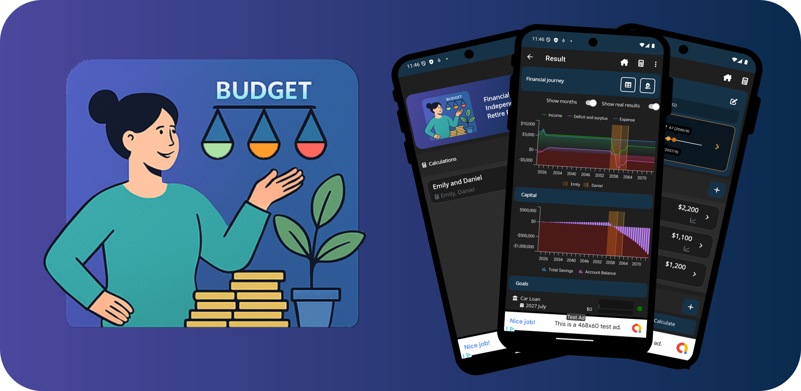

FIRE: Financiële Onafhankelijkheid - Vroeg met Pensioen
Een complete gids over de FIRE-beweging en hoe je financieel onafhankelijk kunt worden om vroeg met pensioen te gaan
Jouw essentiële partner voor financiële onafhankelijkheid
Ontworpen voor de F.I.R.E. (Financial Independence, Retire Early) beweging helpt Finance Planner je om financiële vrijheid op de lange termijn concreet en haalbaar te maken. Je visualiseert, volgt en bereikt je financiële doelen met een duidelijke focus op langetermijndenken, samengestelde rente en slimme strategieën.
In plaats van alleen te focussen op dagelijks budgetteren ondersteunt Finance Planner je bij het maken van bewuste financiële keuzes voor de lange termijn. Of je nu aan het begin staat of richting vervroegd pensioen werkt, bouw je aan blijvende financiële gezondheid.
Visualiseer je voortgang en blijf gemotiveerd op je weg naar financiële onafhankelijkheid.

Bekijk uitgebreide tutorials over hoe je je financiële onafhankelijkheidsplanning kunt maximaliseren met Finance Planner. Leer best practices, tips en geavanceerde strategieën.
Bekijk tutorialsLees onze uitgebreide artikelen over financiële planning en FIRE
Een complete gids over de FIRE-beweging en hoe je financieel onafhankelijk kunt worden om vroeg met pensioen te gaan